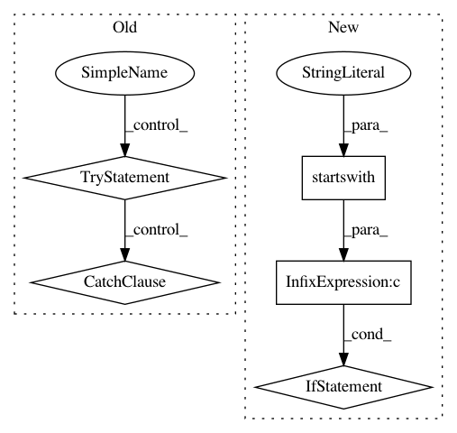

4d6bc366a8ffb5bbef83f5a529616f9acaa31a15,skbio/io/format/blast7.py,,_blast7_sniffer,#Any#,363
Before Change
lines = list(zip(range(3), fh))
if len(lines) < 3:
return False, {}
try:
if (lines[0][1][:7] == "// BLAST" and
(lines[1][1][:8] == "// Query:" or
lines[1][1][:11] == "// Database:") and
(lines[2][1][:10] == "// Subject:" or
lines[2][1][:8] == "// Query:" or
lines[2][1][:11] == "// Database:")):
return True, {}
else:
return False, {}
except IndexError:
return False, {}
@blast7.reader(pd.DataFrame, monkey_patch=False)
def _blast7_to_data_frame(fh):
dtypes = None
x = 0
After Change
if not lines[0].startswith("// BLAST"):
return False, {}
if not (lines[1].startswith("// Query:") or
lines[1].startswith("// Database:")):
return False, {}
if not (lines[2].startswith("// Subject:") or
lines[2].startswith("// Query:") or
lines[2].startswith("// Database:")):
return False, {}
In pattern: SUPERPATTERN
Frequency: 3
Non-data size: 5
Instances
Project Name: biocore/scikit-bio
Commit Name: 4d6bc366a8ffb5bbef83f5a529616f9acaa31a15
Time: 2015-11-04
Author: kestrel.gorlick@gmail.com
File Name: skbio/io/format/blast7.py
Class Name:
Method Name: _blast7_sniffer
Project Name: thenetcircle/dino
Commit Name: 4563e383962690cc196f4551f217d488501b660e
Time: 2019-12-29
Author: oscar.eriks@gmail.com
File Name: bin/count_users_in_rooms.py
Class Name:
Method Name:
Project Name: IDSIA/sacred
Commit Name: 216e20a8ca8e53aa1da7538b242ce29e2d521d7c
Time: 2014-09-25
Author: klaus@idsia.ch
File Name: sacred/commands.py
Class Name:
Method Name: non_unicode_repr